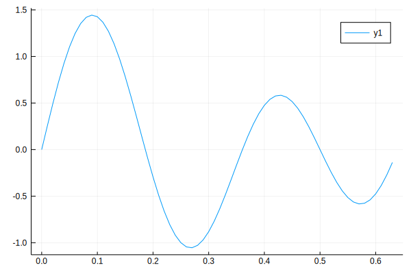

Construction and Simulation of a Simple Model
In this tutorial, we will simulate a very simple model consisting of a generator and a writer as shown in the block diagram shown below.
Model Simulation
Let us construct the model first. See Model Construction for more detailed information about model construction.
using Causal
# Describe the model
@defmodel model begin
@nodes begin
gen = SinewaveGenerator()
writer = Writer()
end
@branches begin
gen => writer
end
endIn this simple model, we have a single output sinusoidal wave generator gen and a writer. In the script above, we constructed the components, connected them together and constructed the model.
We can specify simulation settings such as whether a simulation log file is be to constructed, model components are to be saved in a file, etc.
simdir = "/tmp"
logtofile = true
reportsim = trueAt this point, the model is ready for simulation.
t0 = 0. # Start time
dt = 0.01 # Sampling interval
tf = 10. # Final time
sim = simulate!(model, t0, dt, tf, simdir=simdir, logtofile=logtofile, reportsim=reportsim)Simulation(state:done, retcode:success, path:/tmp/Simulation-ebdae3c3-53ee-4029-b76b-94aff45b41f5)Investigation of Simulation
First, let us observe Simulation instance sim. We start with the directory in which all simulation files are saved.
foreach(println, readlines(`ls -al $(sim.path)`))total 10568
drwxrwxr-x 2 sari sari 4096 Aug 24 21:52 .
drwxrwxrwt 1 root root 10764288 Aug 24 21:52 ..
-rw-rw-r-- 1 sari sari 15236 Aug 24 21:52 d42397dd-86b1-4d09-aec5-064eb71a479c
-rw-rw-r-- 1 sari sari 22051 Aug 24 21:52 report.jld2
-rw-rw-r-- 1 sari sari 1061 Aug 24 21:52 simlog.logThe simulation directory includes a log file simlog.log which helps the user monitor simulation steps.
# Print the contents of log file
open(joinpath(sim.path, "simlog.log"), "r") do file
for line in readlines(file)
println(line)
end
end┌ Info: 2020-08-24T21:52:28.283 Started simulation...
└ @ Causal /home/sari/.julia/dev/Causal/src/utilities/utils.jl:5
┌ Info: 2020-08-24T21:52:28.325 Inspecting model...
└ @ Causal /home/sari/.julia/dev/Causal/src/utilities/utils.jl:5
┌ Info: 2020-08-24T21:52:28.347 Done.
└ @ Causal /home/sari/.julia/dev/Causal/src/utilities/utils.jl:5
┌ Info: 2020-08-24T21:52:28.347 Initializing the model...
└ @ Causal /home/sari/.julia/dev/Causal/src/utilities/utils.jl:5
┌ Info: 2020-08-24T21:52:28.403 Done...
└ @ Causal /home/sari/.julia/dev/Causal/src/utilities/utils.jl:5
┌ Info: 2020-08-24T21:52:28.403 Running the simulation...
└ @ Causal /home/sari/.julia/dev/Causal/src/utilities/utils.jl:5
┌ Info: 2020-08-24T21:52:28.552 Done...
└ @ Causal /home/sari/.julia/dev/Causal/src/utilities/utils.jl:5
┌ Info: 2020-08-24T21:52:28.553 Terminating the simulation...
└ @ Causal /home/sari/.julia/dev/Causal/src/utilities/utils.jl:5
┌ Info: 2020-08-24T21:52:28.567 Done.
└ @ Causal /home/sari/.julia/dev/Causal/src/utilities/utils.jl:5report.jld2 file, which includes the information about the simulation and model components, can be read back after the simulation.
julia> using FileIO, JLD2
julia> filecontent = load(joinpath(sim.path, "report.jld2"))
Dict{String,Any} with 9 entries:
"retcode" => :success
"name" => "Simulation-ebdae3c3-53ee-4029-b76b-94aff45b41f5"
"model/callbacks" => nothing
"model/name" => ""
"model/clock" => Clock(t:10.0, dt:0.01, tf:10.0, paused:false, isrunning:…
"model/id" => "453ada94-ff2a-4b3d-bfb3-fe501c6a339b"
"components/" => SinewaveGenerator(amp:1.0, freq:1.0, phase:0.0, offset:0…
"path" => "/tmp/Simulation-ebdae3c3-53ee-4029-b76b-94aff45b41f5"
"state" => :done
julia> clock = filecontent["model/clock"]
Clock(t:10.0, dt:0.01, tf:10.0, paused:false, isrunning:false)Analysis of Simulation Data
After the simulation, the data saved in simulation data files, i.e. in the files of writers, can be read back any offline data analysis can be performed.
# Read the simulation data
t, x = read(getnode(model, :writer).component)
# Plot the data
using Plots
plot(t, x, xlabel="t", ylabel="x", label="")
A Larger Model Simulation
Consider a larger model whose block diagram is given below

The script below illustrates the construction and simulation of this model
using Causal
using Plots
# Construct the model
@defmodel model begin
@nodes begin
gen1 = SinewaveGenerator(frequency=2.)
gain1 = Gain()
adder1 = Adder(signs=(+,+))
gen2 = SinewaveGenerator(frequency=3.)
adder2 = Adder(signs=(+,+,-))
gain2 = Gain()
writer = Writer()
gain3 = Gain()
end
@branches begin
gen1[1] => gain1[1]
gain1[1] => adder1[1]
adder1[1] => adder2[1]
gen2[1] => adder1[2]
gen2[1] => adder2[2]
adder2[1] => gain2[1]
gain2[1] => writer[1]
gain2[1] => gain3[1]
gain3[1] => adder2[3]
end
end
# Simulation of the model
simulate!(model, withbar=false)
# Reading and plotting the simulation data
t, x = read(getnode(model, :writer).component)
plot(t, x)[ Info: 2020-08-24T21:52:41.803 Started simulation...
[ Info: 2020-08-24T21:52:41.804 Inspecting model...
┌ Info: The model has algrebraic loops:[[5, 6, 8]]
└ Trying to break these loops...
[ Info: Loop [5, 6, 8] is broken
[ Info: 2020-08-24T21:52:42.019 Done.
[ Info: 2020-08-24T21:52:42.019 Initializing the model...
[ Info: 2020-08-24T21:52:42.215 Done...
[ Info: 2020-08-24T21:52:42.215 Running the simulation...
[ Info: 2020-08-24T21:52:42.541 Done...
[ Info: 2020-08-24T21:52:42.541 Terminating the simulation...
[ Info: 2020-08-24T21:52:42.567 Done.